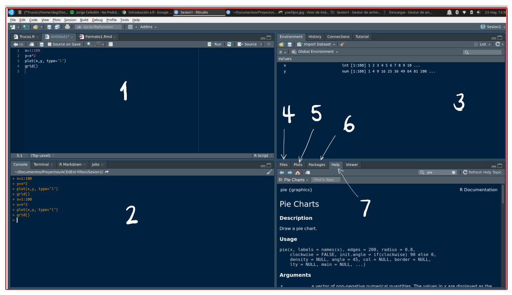

Introducción a R - RStudio

Que es R
Es un lenguaje para la computación estadística, utilizado para el procesamiento de información y generación de modelos estadísticos. Entre las principales caractarísticas estan:
Licencia (GNU GPL) abierta y gratis
Creciente popularidad en ciencia de datos
Multipalataforma (UNIX, Windows, MacOS)
Ross Ihaka y Robert Gentieman (U.Auckland - Nueva Zelanda) 1993
Lenguaje multiparadigma
Codigo construido en C y Fortran
Gran comunidad muy activa
Mas de 7000 paquetes

En el siguiente enlace se pueden obtener los archivos para su instalación : https://www.r-project.org/

Podemos usar este lenguaje utilizando una terminal o mediante la IDE RStudio, la cual integra un conjunto de herramientas que facilitan el uso R a los usuarios
Esta interfaz esta conformada por varias ventana como se muestra en la siguiente imagen

Fuente (Source) : Ventana donde se trabajan los script con código que se guardan para posterior utilización
Consola (Console) : Ventana donde se pueden escribir comandos de manera directa
Ambiente (Environment) : Ventana donde se pueden observar las varables y objetos creados
Archivos (Files) : Ventana que muestra el directorio y los archivos en el que estamos trabajando
Graficos (plots) : Ventana que presenta los gráficos construidos
Paquetes (Packages) : Ventana que permite instalar los paquetes requeridos
Ayudas (Help) : Ventana en la que podemos pedir ayuda sobre las sintaxis de funciones
En los siguientes enlaces se pueden descargar los programas :
RStudio Cloud
RStudio Cloud es una plataforma online que te permite realizar análisis de datos y desarrollo de software en RStudio, sin necesidad de instalar software o configurar tu propio entorno. Puedes acceder a ella desde cualquier navegador web, lo que la convierte en una opción ideal para quienes no tienen un ordenador potente o que necesitan trabajar en equipo.
Ventajas
Accesibilidad: Puedes acceder a RStudio Cloud desde cualquier lugar con conexión a internet.
Facilidad de uso: No necesitas instalar software ni configurar tu propio entorno.
Potente: Ofrece acceso a una amplia gama de herramientas de análisis de datos y desarrollo de software.
Colaboración: Puedes compartir tus proyectos con otros usuarios y trabajar en ellos de forma colaborativa.
Instalación
Al ser una plataforma online, no hay que instalar RStudio Cloud en tu ordenador. Solo tienes que seguir estos pasos:
Creación de una cuenta en RStudio Cloud
- Crea una cuenta gratuita en https://posit.cloud/.
- Elige un plan que se ajuste a tus necesidades. Hay planes gratuitos y de pago.
- Inicia sesión en RStudio Cloud.
- Crea un nuevo proyecto o abre un proyecto existente
Una vez que hayas creado un proyecto, puedes empezar a trabajar en él de inmediato. RStudio Cloud te ofrece una interfaz similar a la de RStudio Desktop, por lo que te resultará familiar si ya has utilizado RStudio antes.
Para ejecutar código R, simplemente escribe el código en el editor de código y haz clic en el botón “Ejecutar”. También puedes usar los atajos de teclado de RStudio para ejecutar código.
Clonar un repositorio de GitHub en RStudio Cloud
En GitHub:
- Accede al repositorio que deseas clonar.
- Copia la URL del repositorio. Puedes encontrarla en la barra de direcciones del navegador. (https://github.com/dgonxalex80/seminarioML.git)
En RStudio Cloud:
- Inicia sesión en tu cuenta de RStudio Cloud.
- Haz clic en “Nuevo proyecto”.
- Selecciona la opción “Desde Git”.
- Pega la URL del repositorio que copiaste en el campo “URL del repositorio”.
- Introduce un nombre para tu proyecto - opciopnal.
- Haz clic en “Clonar”.